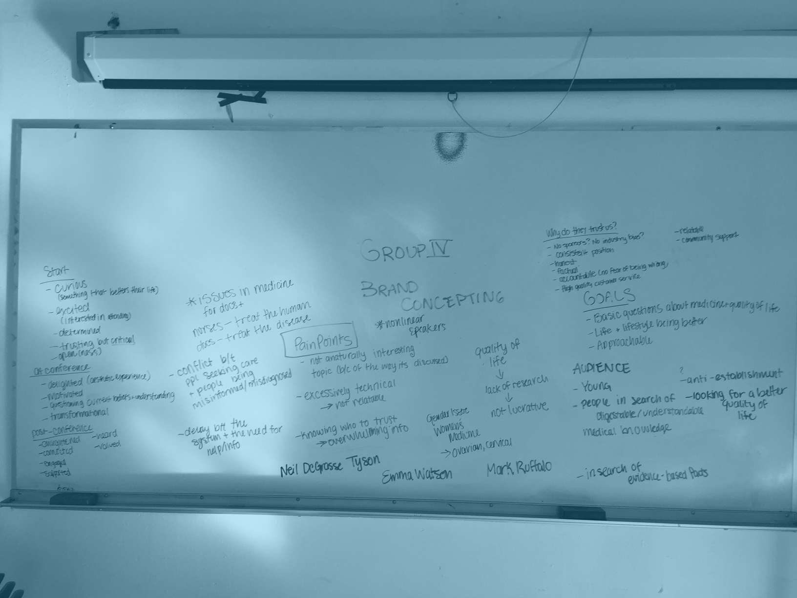
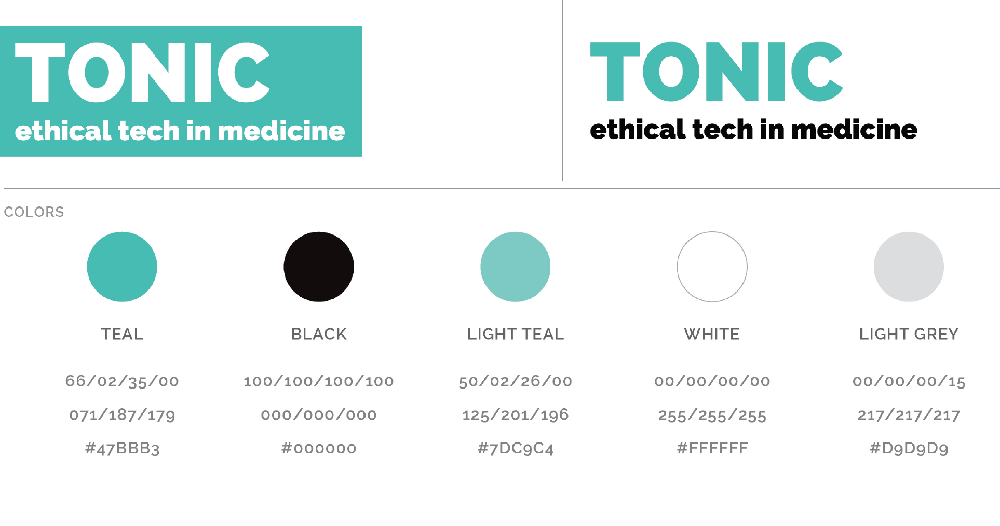
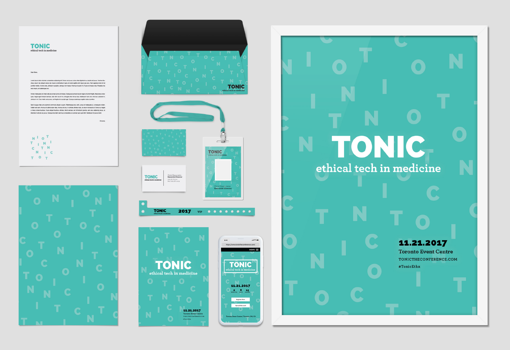
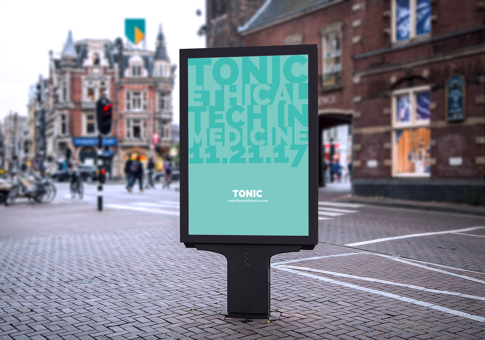
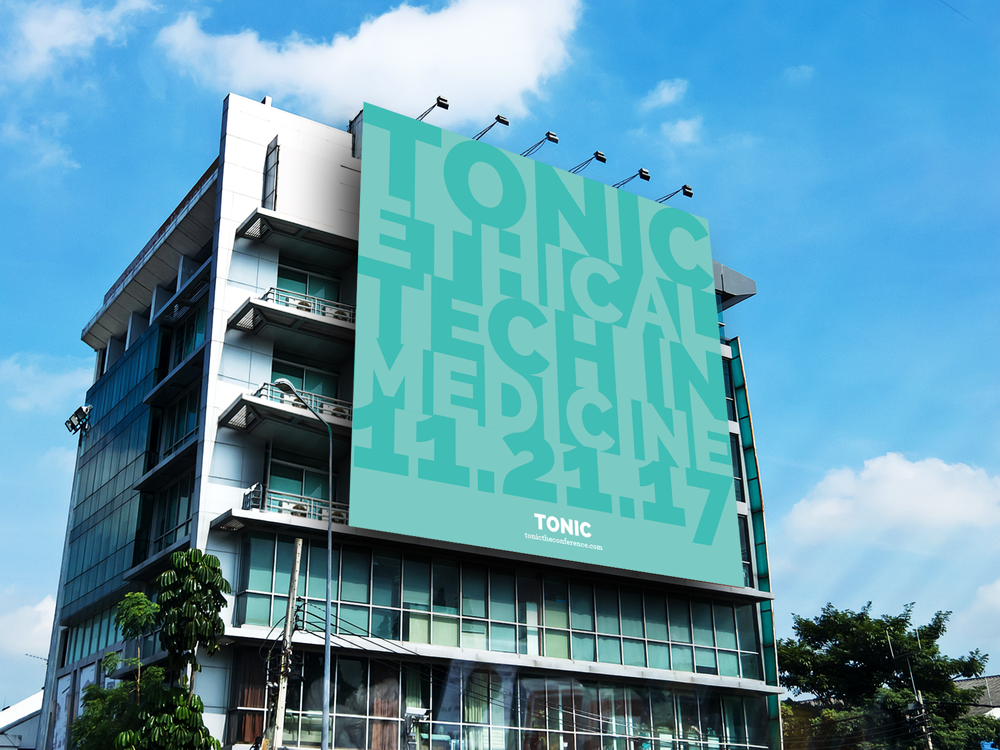
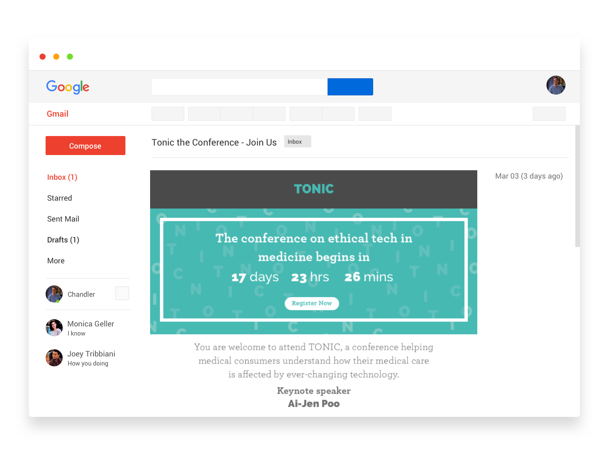
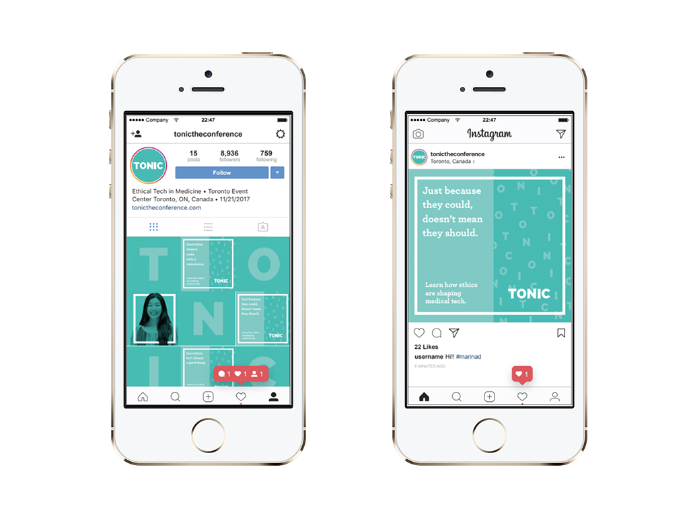
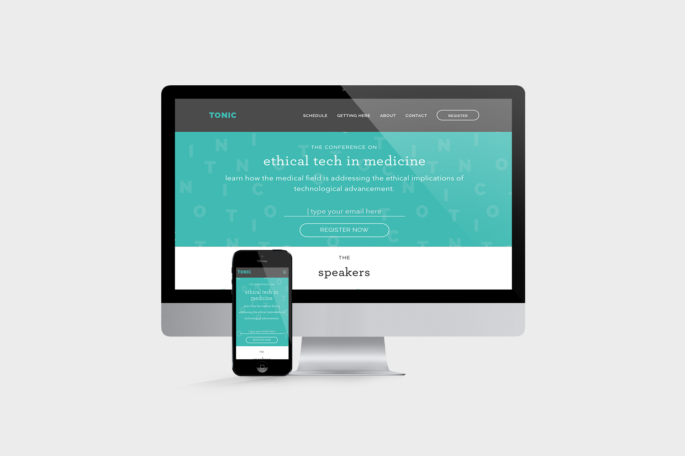
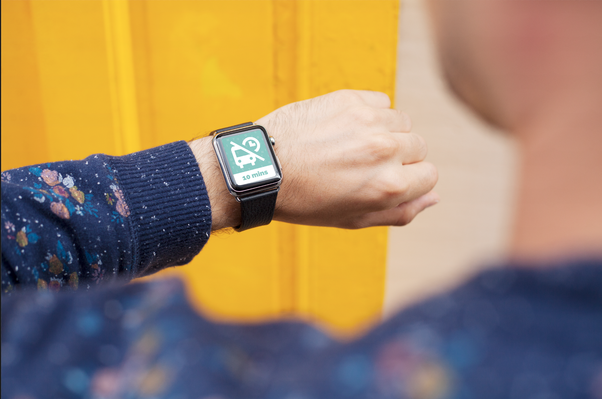

For our typography & interaction class, we were given a brief: design an identity system for a theoretical conference on a topic of your choice. Then, implement the identity system in order to create all the assets necessary to market and execute your conference.
Every person on our team has experienced the complexities of dealing with medical care culture, and decided to empower people with medical needs by providing out-of-the-box medical experts and resources at our conference. We decided to hold our conference in Toronto, Ontario, CA and call it ‘Tonic’ as a nod to previous medical traditions and treatments.
Research & Ideation
Why Toronto?
Toronto’s population is just under 6 million people. However, more than half of the city’s population is foreign-born, making it one of the most diverse cities in the world. Canada as a whole took in over 40,000 refugees in under a year and a half, which contributes to the diverse perspectives and potential expertise in Toronto. An article from Business Insider, citing research from Mercer, claimed that Toronto is the 16th best place in the world to live. Mercer included ‘medical & health considerations’ in their evaluation, including medical supplies and services. After our team evaluated the accessibility and diversity in Toronto, we knew we had found a great location for our conference.
Preliminary Branding & Goals

Audience
People who suffer from or have a loved one who suffers from a chronic disease or disorder who are in search of digestible, understandable medical resources that may help them achieve a higher quality of life
Conference Goals
1. Give attendees the tools and knowledge to better their quality of life
2. Answer questions regarding medicine & how it relates to quality of life through the lens of ethics in technology
2. Answer questions regarding medicine & how it relates to quality of life through the lens of ethics in technology
Goals for Our Brand
1. Maintain an approachable, casual, and relatable brand voice
2. Maintain the nurses’ mentality--nurses treat the human, doctors treat the illness.
3. Be consistent, honest, factual, and accountable at all times.
4. Provide a high quality of customer service and support
2. Maintain the nurses’ mentality--nurses treat the human, doctors treat the illness.
3. Be consistent, honest, factual, and accountable at all times.
4. Provide a high quality of customer service and support
Value Proposition Statement
Tonic the Conference provides people who want to receive information and access resources on medical ethics in technology by providing a digital and physical space dedicated to increasing participants’ understanding of ethical technology in the medical field in a digestible, relatable way, unlike typical medical conferences like The MacLean Conference.
Identity Design


Advertising




Digital Products

